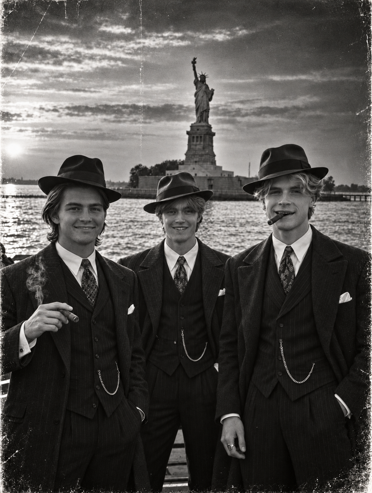
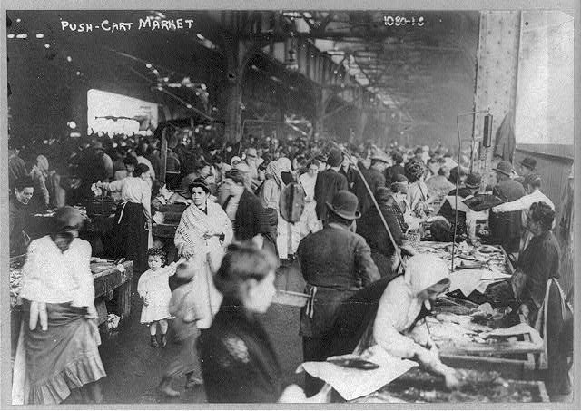
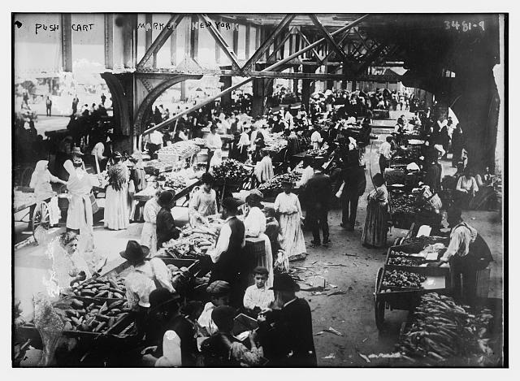

The Manhattan Three
The three men whose reign of disorder unsettled early twentieth-century Manhattan.

In the summer of 1913, three men took an unusual interest in the everyday tranquility of New Yorkers. Ron, Ronnie, and Ronald, collectively the Manhattan Three, became known for their meticulous yet oblique approach to crime.
Several incidents involving produce, hats, balloons, and the disruption of otherwise uneventful mornings were credited to the dastardly trio. Yet, the identity of the perpetrators could rarely be established to the satisfaction of anyone except the alleged victims.
The most troubling accusation, however, arose from an unlikely setting: a breakfast table.
At the beginning of the twentieth century, Manhattan's streets were crowded with vendors, horse-drawn wagons, streetcars and pedestrians. In that environment, relatively small intrusions into public routine could produce an outsized sense of fear.
The activities of the Manhattan Three exploited precisely this fact. The quiet nature of their deeds was a catalyst that began an era of distrust and suspicion. Nothing of substantial value was taken—a fact that brought no respite to the worried public. What hidden motive drove these men? The unknown was more frightening than the simple dangers of traditional gangs, and their infrequent and inexplicable behavior acquired the vocabulary of an organized criminal campaign.

One busy market morning, several apples—at least three—were discovered bearing small faces drawn in dark pigment. Some displayed a mustache; others appeared to wear a look of reproach. No witnesses could say precisely when the faces appeared.
A number of pedestrians complained of sudden reports resembling gunfire, later traced to the bursting of common balloons. The practice was said to have been carried out immediately behind otherwise unsuspecting citizens. Conversations ended abruptly. The offenders were never conclusively identified. Psychiatrists saw an increase in severe cases of balloonaphobia, a debilitating disorder that, among those affected, stole joy from common celebratory events.
At a luncheon, several gentlemen's hats were allegedly rearranged while their owners were dining. Two guests are said to have departed wearing unfamiliar bowlers. The subsequent investigation yielded neither an explanation nor any convincing account of a motive. When interviewed, one man exclaimed in alarm and distress, "It was not my hat."
The breakfast incident
The most chilling account was furnished by one Tom Thomason, a respectable gentleman of settled habits, who began an otherwise ordinary morning with a bowl of plain oatmeal.
Having eaten nearly the entire serving, Mr. Thomason discovered, at the very bottom, one raisin. The oatmeal had been prepared plain, as was his custom. Upon making the unsettling discovery, Mr. Thomason was immobilized with shock. Only when his brother visited hours later did Mr. Thomason regain the wherewithal to tear his eyes away from the horrible sight—that single raisin, wrinkled and unanticipated.
There were no witnesses, no physical evidence connecting the fruit to any person, and no proof that a crime had occurred. Thomason nevertheless held an unshakable conviction: it was Ronnie, Ronald, or Ron. Ron, in particular, was believed to have had a raisin at some point as a child or adult. He had no proof. But in his heart of hearts, he knew it was the Manhattan Three. In his words, "It was [...] a big deal. It was [...] a raisin."
Nothing in the surviving account establishes how the raisin entered the bowl. Thomason's certainty, however, appears never to have diminished. And that raisin, that chthonian intruder, still strikes fear into the hearts of his descendants. Will they strike again? Next time, will there be two raisins? Three? They can only hope and tread carefully with that sword of Damocles prepared to strike.
